1Unit 7.1 | DOK 1
Classify each sequence as arithmetic, geometric, or neither. State the common difference or ratio when one exists.
- 4, 12, 36, 108, ...
- 90, 75, 60, 45, ...
- 3, 7, 13, 21, ...
classification/evidence:
ratio or multiplier:
Classify each sequence as arithmetic, geometric, or neither. State the common difference or ratio when one exists.
A phone app starts with 180 users and is multiplied by 1.25 each week. Make a table for weeks 0 through 4, then state whether this is growth or decay and why.
For $y=12(1.4)^x$, identify the starting value, multiplier, and whether the model represents growth or decay.
For each table, write an exponential equation in the form $y=ab^x$.
| x | 0 | 1 | 2 | 3 |
|---|---|---|---|---|
| Table A | 6 | 18 | 54 | 162 |
| Table B | 80 | 40 | 20 | 10 |
For $y=3(2)^x$, state the y-intercept, multiplier, and horizontal asymptote.
The graph shows an exponential function. Use the graph to estimate the y-intercept and horizontal asymptote, then make a small table for three integer x-values.
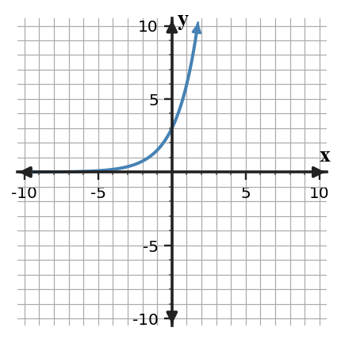
Models A and B are shown. Identify which model is linear and which is exponential, estimate the first integer input where B is larger, and explain eventual growth.
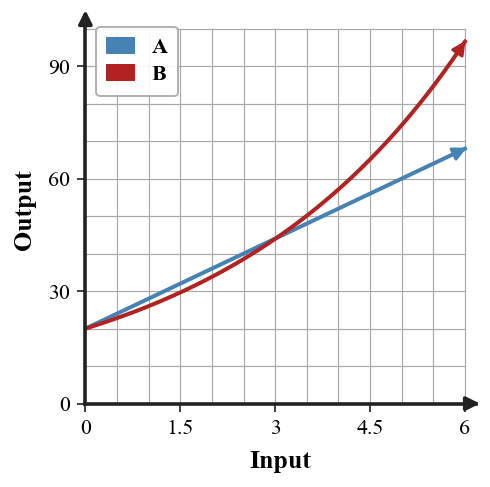
A student says the table is linear because the outputs increase. Use numerical evidence to accept or reject the claim.
| x | 0 | 1 | 2 | 3 |
|---|---|---|---|---|
| y | 6 | 12 | 24 | 48 |
Use two consecutive points in the data to estimate the growth factor, then state whether the data show growth or decay.
| Day | 0 | 1 | 2 |
|---|---|---|---|
| Views | 120 | 180 | 270 |
The scatter plot is close to exponential growth but not perfect. Estimate a reasonable starting value and multiplier, then explain one limitation of using the model for far-future predictions.
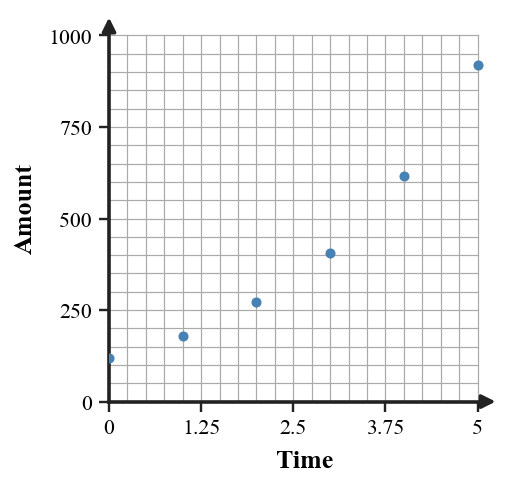
Classify each sequence as arithmetic, geometric, or neither. State the common difference or ratio when one exists.
A video starts with 240 views and is multiplied by 1.5 each day. Make a table for days 0 through 4, then state whether this is growth or decay and why.
For $y=90(0.6)^x$, identify the starting value, multiplier, and whether the model represents growth or decay.
For each table, write an exponential equation in the form $y=ab^x$.
| x | 0 | 1 | 2 | 3 |
|---|---|---|---|---|
| Table A | 4 | 10 | 25 | 62.5 |
| Table B | 120 | 90 | 67.5 | 50.625 |
For $y=6(0.5)^x$, state the y-intercept, multiplier, and horizontal asymptote.
The graph shows an exponential function. Use the graph to estimate the y-intercept and horizontal asymptote, then describe the end behavior.
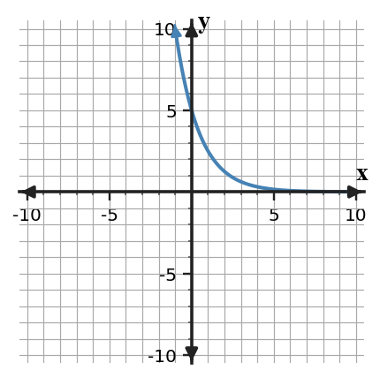
Models A and B are shown. Identify which model is linear and which is exponential, compare their starting values, and explain eventual growth.
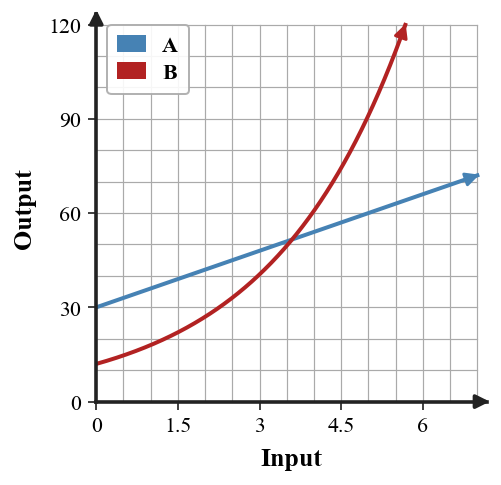
A student says the table is exponential because the outputs increase. Use numerical evidence to accept or reject the claim.
| x | 0 | 1 | 2 | 3 |
|---|---|---|---|---|
| y | 4 | 9 | 14 | 19 |
Use two consecutive points in the data to estimate the decay factor, then state whether the data show growth or decay.
| Hour | 0 | 1 | 2 |
|---|---|---|---|
| Amount | 500 | 400 | 320 |
The scatter plot is close to exponential decay but not perfect. Estimate a reasonable starting value and multiplier, then explain one limitation of using the model for far-future predictions.
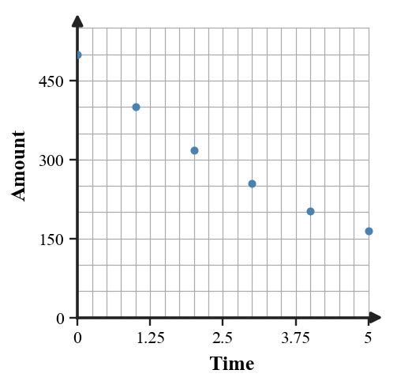
Write the multiplier for each percent change.
A medicine level starts at 320 mg and is multiplied by 0.75 each hour. Make a table for hours 0 through 4, then state whether this is growth or decay and why.
Write an exponential equation with starting value 8 and multiplier 3.
Find an exponential function that passes through $(2,48)$ and $(5,384)$. Show how you found the multiplier before writing the equation.
For $y=4(1.5)^x+1$, state the y-intercept and horizontal asymptote.
The graph shows a shifted exponential function. Estimate the horizontal asymptote and y-intercept, then explain how the vertical shift appears.
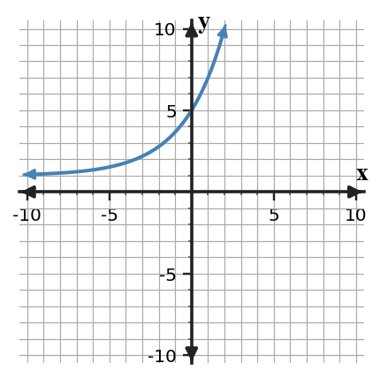
Models A and B are shown. Use the graph to compare early growth with later growth and identify the family of each model.
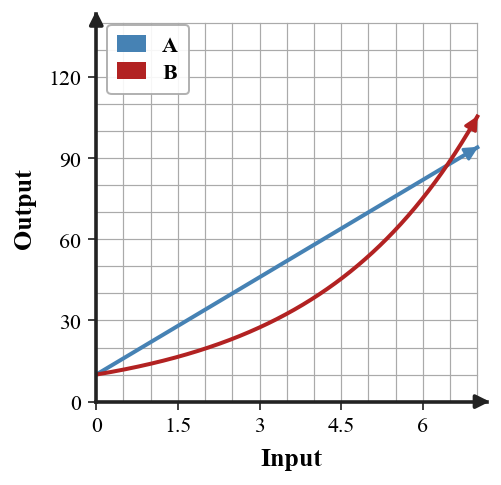
Two models start at 40: $L(x)=40+12x$ and $E(x)=40(1.25)^x$. Compare them at $x=0,1,2,3,4$ and decide which grows faster later. Explain with evidence.
A scatter plot trend is increasing by about a factor of 1.5 each step. State the likely model family and what the multiplier means.
A student proposes a linear model for the data because the amount increases each time. Use the scatter plot to decide whether an exponential model is more reasonable, and justify.
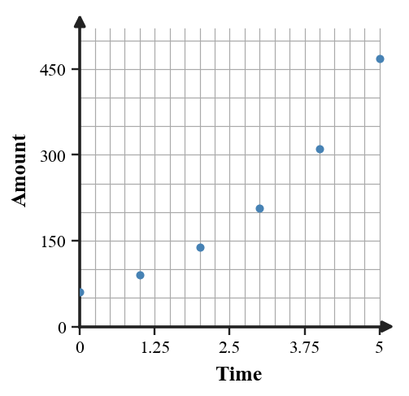
Write the multiplier for each percent change.
A machine value starts at 5000 and is multiplied by 0.8 each year. Make a table for years 0 through 4, then state whether this is growth or decay and why.
Write an exponential equation with starting value 150 and multiplier 0.8.
Find an exponential function that passes through $(1,24)$ and $(4,192)$. Show how you found the multiplier before writing the equation.
For $y=8(0.75)^x+2$, state the y-intercept and horizontal asymptote.
The graph shows a shifted exponential function. Estimate the horizontal asymptote and y-intercept, then explain how the vertical shift appears.
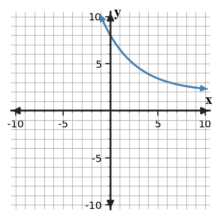
Models A and B are shown. Use the graph to decide which grows faster at first and which eventually grows faster.
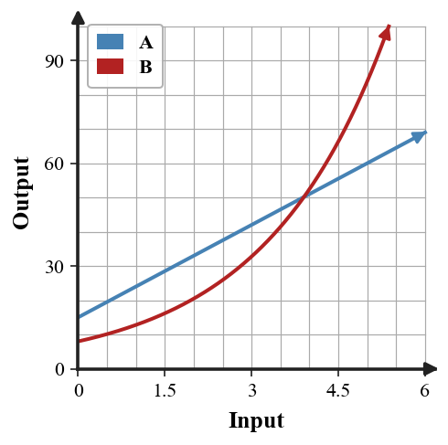
Two models start at 30: $L(x)=30+15x$ and $E(x)=30(1.4)^x$. Compare them at $x=0,1,2,3,4$ and decide which grows faster later. Explain with evidence.
A scatter plot trend is decreasing by about a factor of 0.8 each step. State the likely model family and what the multiplier means.
A student proposes subtracting the same amount each step. Use the scatter plot to decide whether exponential decay is more reasonable, and justify.
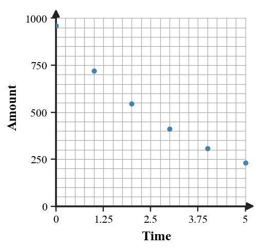
An item costs $\${20}$ now and increases by 5% each year. Write the multiplier, write a model, and predict the cost after 5 years.
From the data, estimate the multiplier from day 0 to day 1.
| Day | 0 | 1 | 2 |
|---|---|---|---|
| Count | 60 | 90 | 135 |
Complete the table and describe the repeated percent change.
| Step | 0 | 1 | 2 | 3 | 4 |
|---|---|---|---|---|---|
| Amount | 600 | 480 | 384 |
Use the graph and equation $y=2(3)^x$ to identify the y-intercept, multiplier, and horizontal asymptote.

Find the common ratio between consecutive terms when it exists.
A student claims constant ratios are enough to prove a model is linear. Explain the error, give a counterexample table, and revise the statement.
Complete the statement: In $y=a(b)^x$, $a$ represents ______ and $b$ represents ______.
Compare a linear model and an exponential-growth model for the scatter plot. Choose the better model and support it with multiplicative evidence.
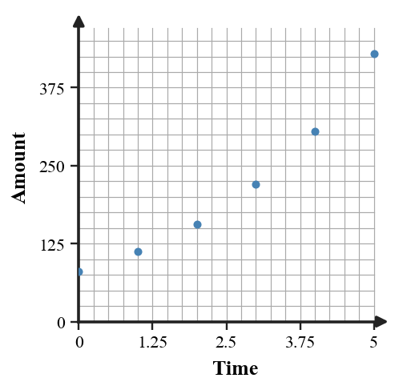
Complete the sentence: In $y=a(b)^x$, the graph crosses the y-axis at ______ and has horizontal asymptote ______ when there is no vertical shift.
Compare model A and model B using graph evidence. Include one statement about y-intercept and one about long-term growth.
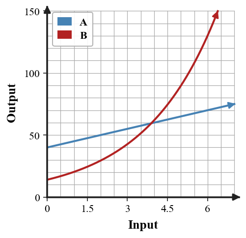
A television costs $\${1500}$ now and decreases by 15% each year. Write the multiplier, write a model, and predict the value after 4 years.
From the data, estimate the multiplier from hour 0 to hour 1.
| Hour | 0 | 1 | 2 |
|---|---|---|---|
| Amount | 640 | 320 | 160 |
Complete the table and describe the repeated percent change.
| Step | 0 | 1 | 2 | 3 | 4 |
|---|---|---|---|---|---|
| Amount | 125 | 150 | 180 |
Use the graph and equation $y=8(0.6)^x+1$ to identify the y-intercept, multiplier, and horizontal asymptote.
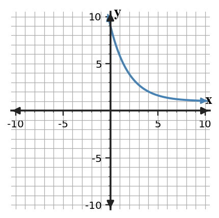
Find the common ratio between consecutive terms when it exists.
A student claims constant first differences are enough to prove a model is exponential. Explain the error, give a counterexample table, and revise the statement.
Complete the statement: In $P(t)=a(b)^t$, $a$ is the value at $t=0$ and $b$ tells ______.
Compare a linear model and an exponential-decay model for the scatter plot. Choose the better model and support it with multiplicative evidence.
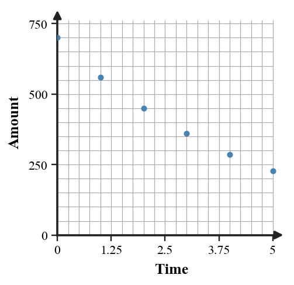
Complete the sentence: In $y=a(b)^x+k$, the vertical shift changes the horizontal asymptote to ______.
Compare model A and model B using graph evidence. Include one statement about change pattern and one about long-term growth.
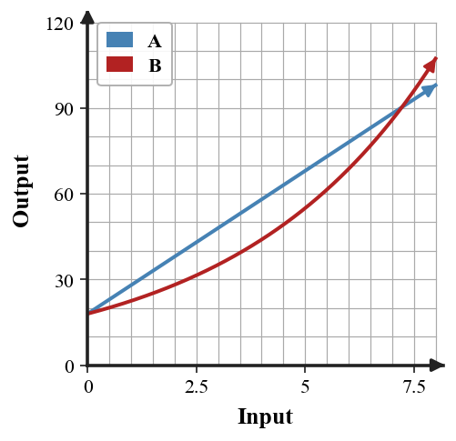
Use the graph to compare a linear and an exponential model. Estimate a crossover point and explain which eventually dominates.
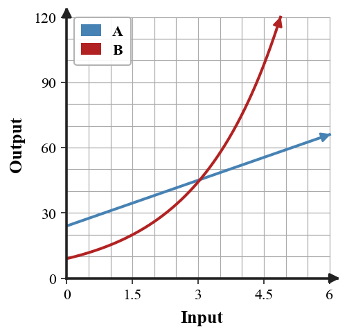
A table has $y=5$ when $x=0$ and the outputs double each time $x$ increases by 1. Write the equation.
The data grow quickly. Build an approximate exponential model, then explain why the prediction may become unrealistic in a limited population.
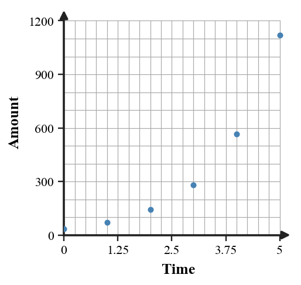
Label each situation as exponential growth, exponential decay, or not exponential.
Recommend whether a linear, quadratic, or exponential model best fits this change pattern. Defend your recommendation and reject one other family.
| Step | 0 | 1 | 2 | 3 | 4 |
|---|---|---|---|---|---|
| Value | 12 | 18 | 27 | 40.5 | 60.75 |
Identify whether $y=5(1.2)^x$ increases or decreases and name one graph feature that supports your answer.
Use the table to determine whether the relationship is exponential. If it is, identify the multiplier and write one sentence of evidence.
| x | 0 | 1 | 2 | 3 |
|---|---|---|---|---|
| y | 7 | 14 | 28 | 56 |
Use two points in the data to estimate the growth factor.
| Time | 0 | 1 | 2 |
|---|---|---|---|
| Amount | 35 | 70 | 140 |
The graph shows a shifted growth model. Estimate the asymptote and use one point to describe why the model is exponential.
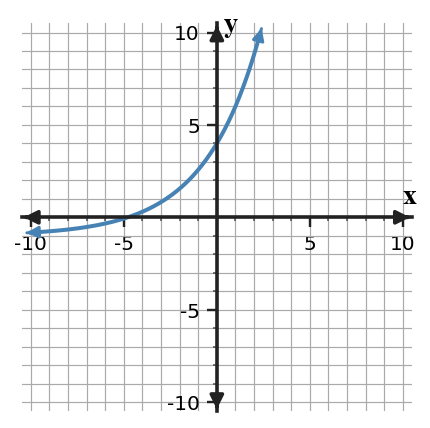
The table shows a collectible value.
| Year | 0 | 2 | 4 |
|---|---|---|---|
| Value | 50 | 72 | 103.68 |
Write an exponential equation and use it to predict year 6.
Use the graph to compare a linear and an exponential model. Estimate a crossover point and explain which eventually dominates.
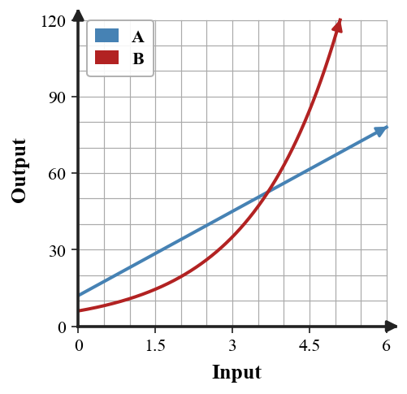
A table has $y=80$ when $x=0$ and the outputs are multiplied by 0.5 each time $x$ increases by 1. Write the equation.
The data decay quickly. Build an approximate exponential model, then explain what long-term behavior the model predicts and why context matters.
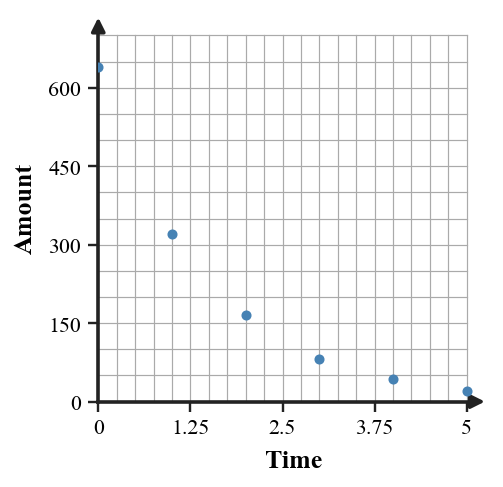
Label each situation as exponential growth, exponential decay, or not exponential.
Recommend whether a linear, quadratic, or exponential model best fits this change pattern. Defend your recommendation and reject one other family.
| Step | 0 | 1 | 2 | 3 | 4 |
|---|---|---|---|---|---|
| Value | 90 | 72 | 57.6 | 46.08 | 36.864 |
Identify whether $y=9(0.7)^x$ increases or decreases and name one graph feature that supports your answer.
Use the table to determine whether the relationship is exponential. If it is, identify the multiplier and write one sentence of evidence.
| x | 0 | 1 | 2 | 3 |
|---|---|---|---|---|
| y | 96 | 48 | 24 | 12 |
Use two points in the data to estimate the decay factor.
| Time | 0 | 1 | 2 |
|---|---|---|---|
| Amount | 960 | 480 | 240 |
The graph shows a shifted decay model. Estimate the asymptote and use one point to describe why the model is exponential.
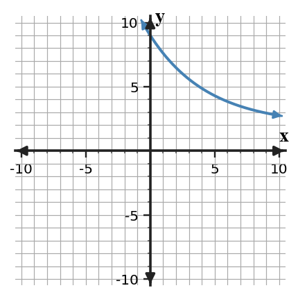
The table shows a bacteria count.
| Hour | 0 | 2 | 4 |
|---|---|---|---|
| Count | 30 | 67.5 | 151.875 |
Write an exponential equation and use it to predict hour 6.